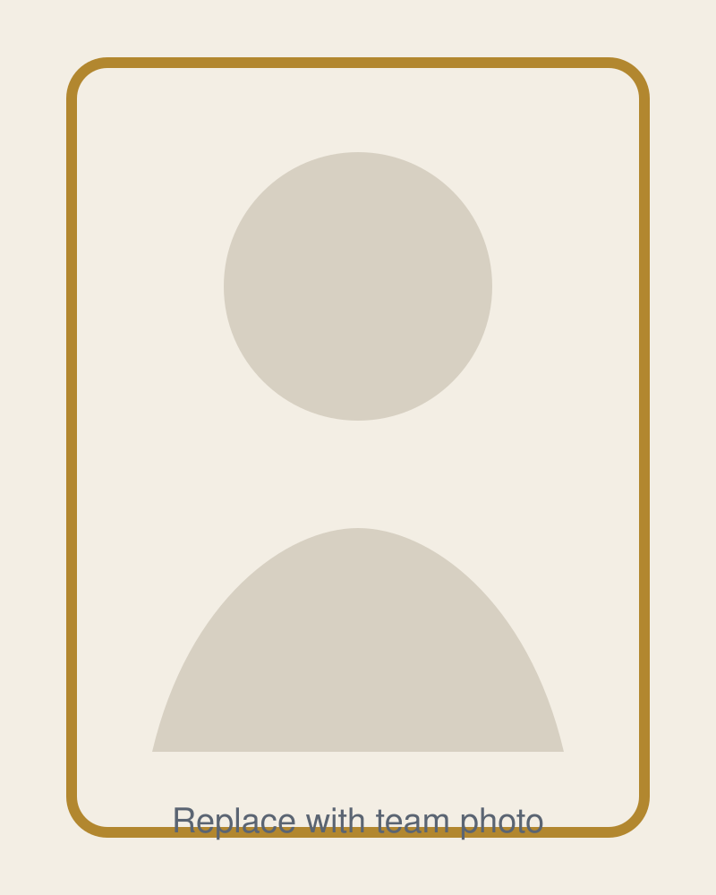
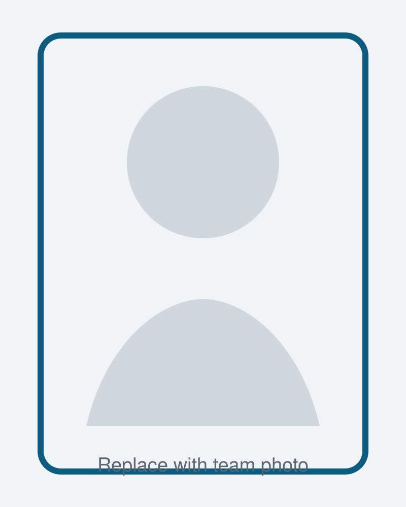
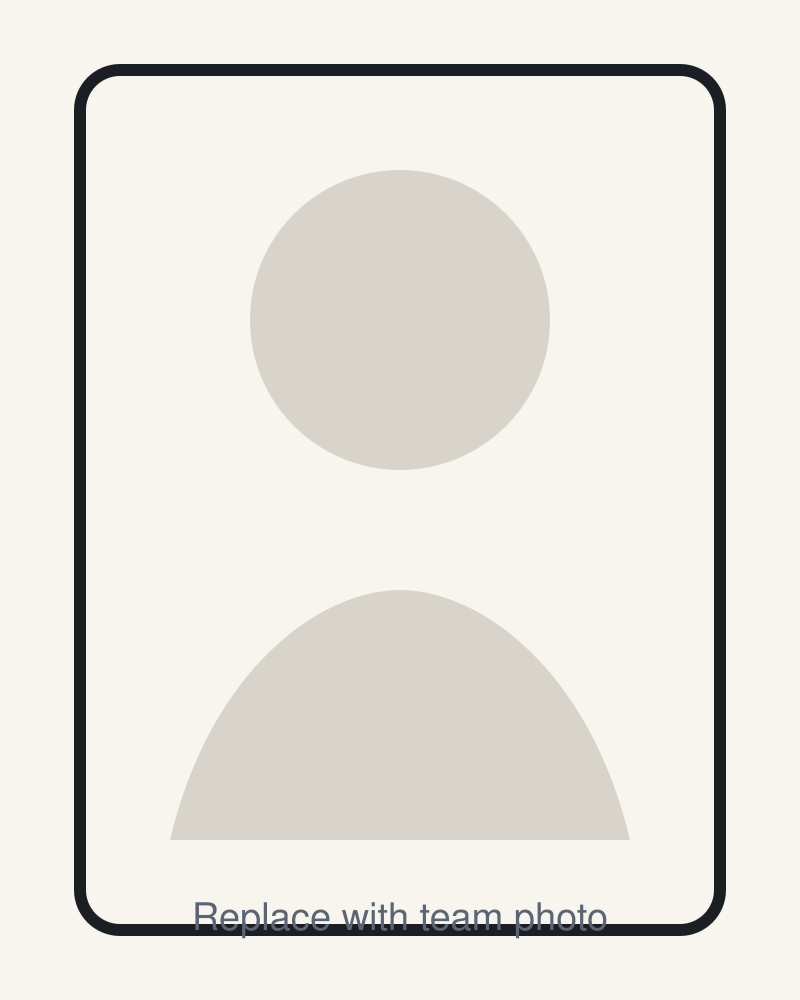

Inicio
Caso técnico con acabado de producto
Pythia
Ciencia de Datos para Cafeterías
Proyecto final del Máster en Ciencia de Datos en UCM/NTIC.
Proyecto real Utiliza datos reales de ventas y reseñas de clientes de una cafetería de Madrid para construir una aplicación de cafetería práctica e inteligente.
Integra distintos campos de conocimiento Combina de forma eficaz contenidos de ETL, EDA, Machine Learning, Deep Learning, Series Temporales, NLP y visualización avanzada en una única solución coherente.
Construido como producto real Presentado como un MVP funcional en Streamlit, mostrando el proyecto como un producto utilizable y no solo como una entrega académica.
Reconocimientos Obtuvo la calificación máxima y el 2.º puesto en un concurso de pitch.
Detalles del Proyecto
Pythia está diseñado para leerse de una sola vez: primero el reto de negocio, después el flujo analítico, luego las decisiones de modelado y, por último, el impacto medible.
Problema de Negocio
Pythia parte de un reto real de toma de decisiones: cómo convertir los datos disponibles en una guía fiable que permita actuar mejor y más rápido en el contexto de una cafetería.
Por qué importa
Muchas organizaciones tienen datos operativos, pero no una forma fiable de traducirlos en decisiones prácticas del día a día.
La brecha
La información bruta no genera valor por sí sola. Hace falta un flujo analítico estructurado que convierta los datos en insight utilizable.
Aportación de Pythia
Pythia combina enfoque de negocio, rigor técnico y presentación clara para que los resultados conecten de forma natural con la acción real.
Datos y Metodología
La metodología está pensada para ser técnicamente sólida y fácil de auditar. Cada fase contribuye a la confianza: procedencia de los datos, decisiones de preprocesado, diseño de evaluación e interpretación transparente.
Componentes principales
- fuentes de datos y alcance
- limpieza y transformación
- ingeniería de variables
- configuración de la evaluación
- interpretación y limitaciones
Lo que debe mostrar esta sección
- pipeline de datos y alcance del dataset
- adquisición, controles de calidad y preprocesado
- estrategia train-validation-test
- decisiones de reproducibilidad y estructura del repositorio
Espacio para gráfico del pipeline de datos, captura de EDA o tabla metodológica
Modelado
La sección de modelado debe comunicar criterio técnico y contención: por qué los enfoques elegidos encajan con el problema, qué alternativas se consideraron y cómo se equilibró el rendimiento con la interpretabilidad y la robustez.
Puntos de revisión
- baselines antes de modelos complejos
- justificación de la selección del modelo
- ajuste sin sobreentrenamiento
- explicabilidad y utilidad de negocio
Espacio para comparativa de modelos, gráfico de importancia de variables o diagrama de arquitectura
Resultados e Impacto
Los resultados deben mostrar más que métricas. Pythia gana fuerza cuando la historia del rendimiento se conecta con el valor para el usuario, la calidad de la decisión y la mejora operativa.
Evidencias que conviene incluir
- tabla final de métricas
- comparación con baselines
- impacto práctico en la toma de decisiones
- impacto comunicativo y reconocimientos
Espacio para tabla de resultados, gráfico de rendimiento o panel de impacto
Demo en Video
Equipo
Pythia fue construido por un equipo con foco compartido en calidad técnica, pensamiento de producto y comunicación clara.

### Integrante Uno Ciencia de datos, experimentación y enfoque analítico.
### Integrante Dos Modelado, validación técnica e implementación.
### Integrante Tres Narrativa de producto, presentación y comunicación con stakeholders.Premios
El proyecto unió buen trabajo técnico con buena comunicación, y los resultados lo reflejan.
Calificación máxima
Pythia obtuvo la máxima evaluación académica en el Trabajo Fin de Máster.
2.º puesto en concurso de pitch
El proyecto también destacó en contexto de presentación, validando su claridad, storytelling y posicionamiento práctico.
Presentación lista para recruiters
La combinación de acabado de producto y profundidad técnica hace que el proyecto funcione especialmente bien en conversaciones de selección.
Contacto
Para oportunidades, conversación técnica o una explicación del proyecto, puedes escribir a través de los siguientes canales.
GitHub
Pythia
Trabajo Fin de Máster en la UCM
Ciencia de Datos
Disponible para entrevistas técnicas, walkthroughs del proyecto y conversaciones de colaboración